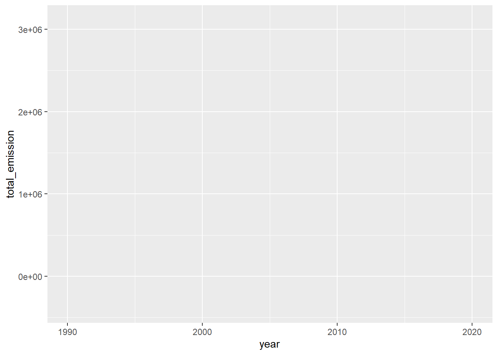
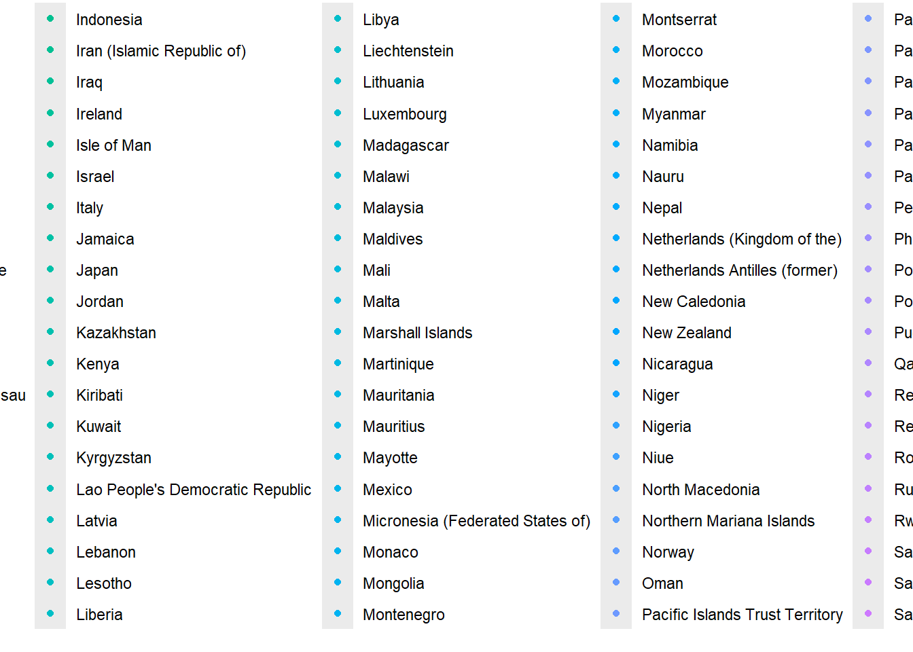

Code
rm(list=ls())rm(list=ls())library(tidyverse)── Attaching core tidyverse packages ──────────────────────── tidyverse 2.0.0 ──
✔ dplyr 1.1.4 ✔ readr 2.1.5
✔ forcats 1.0.0 ✔ stringr 1.5.1
✔ ggplot2 3.5.2 ✔ tibble 3.2.1
✔ lubridate 1.9.4 ✔ tidyr 1.3.1
✔ purrr 1.1.0
── Conflicts ────────────────────────────────────────── tidyverse_conflicts() ──
✖ dplyr::filter() masks stats::filter()
✖ dplyr::lag() masks stats::lag()
ℹ Use the conflicted package (<http://conflicted.r-lib.org/>) to force all conflicts to become errors# cargamos los datos
#recuerden hacerlo desde su carpeta
agro<-read.csv("../datos transformados/agro.csv")
#agro <- read_csv("datos transformados/agro.csv")Usaremos el paquete ggplot para graficar el cambio de la emisión total (total_emission) en función de los años (year)
ggplot(agro, # bloque 1
aes(year, total_emission) #bloque 2
) 
esteticasaes( ): una estetica es una propiedad visual de los objetos.
La estetica incluye características como: el tamaño, la forma el color, de los puntos en estas capas serán fijas en todas las capas del gráfico salvo que se modifiquen el las esteticas de los otros bloques
Sus argumentos, por lo tanto son son x= eje x, y =eje y, colour= color, size=tamaño, alpha0controla la tranparencia,shape= la forma, fill=color del relleno de las formas solidas de la barras.
agro$area<-as.factor(agro$area)
ggplot(agro, # bloque 1
aes(year, total_emission,colour=area ) #bloque 2
)+
geom_point() #bloque 3
Sacar luego ggpplot(datos, #bloque de datos aes( x= variable_x, #indicamos el eje x y= variable_y #indicamos el eje x
)
geom() indica que hacer con los datos geom_* , reemplazando * por diferentes estilos de gráficos a modo de ejemplo
geom_histogram() histograma x es la varible continua geom_point()-> grafico de dispersión geom_bar()-> para gráfcos de barras donde x es dsiteta geom_boxplot-> para bos plot
Permite realizar sub gráficos que muestran cada uno de los datos, las facetas separan se separan según variables categóricas.
tres tipos de facetado
facet_null(): facet_wrap(): frect_grid():
Permiten modificar los aspectos esteticos del gráfico, no modifican ni tienen relación con los gráficos son ula colección de elementos que mejoran la estetica de los gráficos Sirven para:
agreagr ejes colocar leyendas colores de fondo tamaño de márgenes
gg plot usa por defecto theme_grey()
gg plot tiene temas disponibles temas predeterminados.
theme_grey()
theme_gray()
theme_bw() theme_linedraw() theme_light()
theme_dark() theme_minimal theme_classic() theme_test()